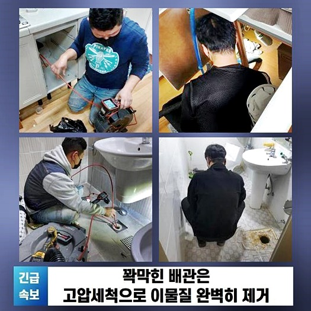
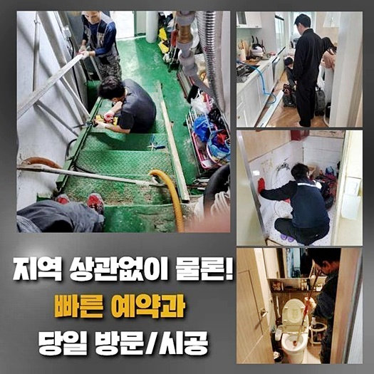
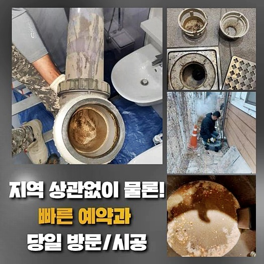
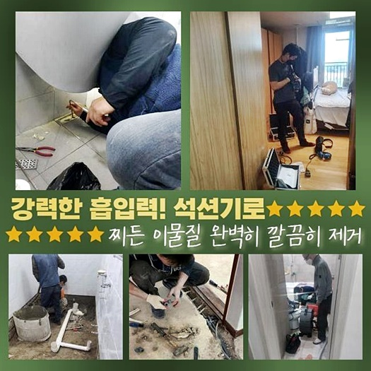
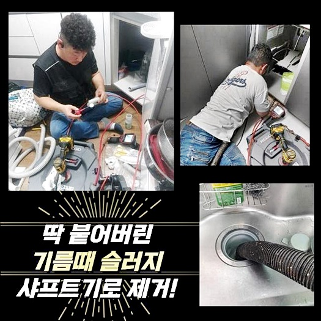
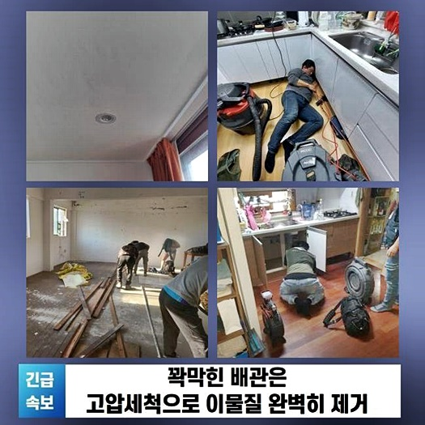
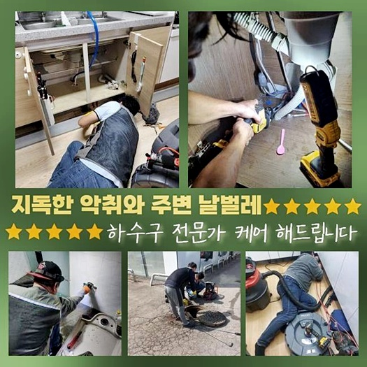

🏠 일산 산황동씽크대배수관막힘 풍산동 하수구청소 해결방법
용인 싱크대막힘 전문 시공 후기

📋 작업 개요
- 위치: 용인
- 서비스 유형: 싱크대막힘, 하수구막힘, 배관막힘, 역류해결, 뚫는업체, 배관청소, 고압세척
- 작업 일시: 2024. 6. 23. 11:18
- 업체명: 하수구수사대 (010-5615-2118)
🔍 문제 상황
일산 산황동씽크대배수관막힘 풍산동 하수구청소 해결방법
배관들이 문제를 보이면 생활을 이어나가는데에 여러 불편이 생기기 마련입니다
앞으로 배관이 막힌 사례로 이런저런 사항들을 설명드려볼테니 이득이 될 만한 부분을 살핀다면 이점이 있으실거에요
이제부터 설명을 드려볼게요
가정에서 나타나게되는 문제들로 욕실어딘가에서 막히는 문제들을 들어볼 수 있겠죠
그리고 주로 세탁관련 전자제품이 위치해있는 공간엔 배수가 이뤄질때 옷감 잔해나 먼지처럼 여러 이물들이 누적되서 배수라인을 난관에 빠트리는 경우들이 자주 생겨나게 됩니다
배수구가 막힘문제에 봉착했을 경우 이어진 어느 지점에서 역류들이 생겨나고 심층부까지 오염물이 잔존해있는 문제를 볼 수 있답니다
방문드린 장소에서는 화장실내부에서 수도를 흐르게했을때 다용도실로 물들이 역류해버리는 상태라고 연락을 하셨죠
저희의경우 오랜시간에 걸쳐 막히는 문제들을 풀어내고 있는 까닭에 일반적으로 문제들을 예측한다음 진단해봐요
이때 있어야하는 장치를 마련하고 분이 계신곳에 도착했죠
일반적으로 배수구가 문제를 일으키는것은 가지각색이기에 어떤 이유다라고 설명이 안되나 대부분은 머리카락등과 기름때들을 꼽을 수 있죠
질긴 머리카락등과 흡착물이 섞였을땐 딱딱해져 배수로를 막혀버리게 해요

🔎 원인 분석
💡 전문가 진단: 정밀 진단 장비를 사용하여 슬러지의 고착 여부를 판명하고 타격/세척 작업을 실시했습니다.
반대로 한 군데가 막힌탓에 이곳저곳에 악영향들을 미치는 상태면 세척이 힘들 수 밖에 없죠
장비를 운용치않고 수리가 쉽지않으므로 저희가 동반되어야한다고 말할수있죠
방문한뒤 발코니쪽으로 이동하였더니 배수구멍 밖으로 범람한 오염원을 목격했습니다
냄새들도 풍기는걸 확인하니 오랫동안 잔해물이 누적되서 증상을 야기한걸로 판단했는데요
벽측에 흡착된 슬러지들이 통로를 막아선것을 즉각적으로 확인해보고자 했습니다
안쪽에 석션을 투입하고 흡입과정을 이어갔어요
바로 문제가 해결될 거란 생각은 멀리했지만 예상대로 뚫리는 결과는 없었죠
가벼운 상황일 시 석션장비로 문제를 바로잡는게 이뤄지는 상황들도 존재합니다
반대로 이곳의 문제들은 그렇지않아서 스케일링을 해보기로 했어요
하지만 곧장 샤프트기기를 경각심없이 운용한다면 배수라인을 손상시킬 수 있어서 내측을 내시경장치로 진단을 거치고 수리를 이어가기로 했답니다
내시경장치로 배수라인을 막히게하는 머리카락들과 오염원을 파악해보았습니다
관리를 하지않고 오래도록 쌓여서 군데군데 녹아든 상태였고 슬러지의 모습으로 거듭됨으로 수월하게 내려가질 못했죠

🔧 작업 과정
보통 슬러지들은 씽크대쪽 배수구에서는 보여지지만 세탁기에서 발생되는 잔해물도 퇴적되어 문제들을 발생시키는 경우들도 존재합니다
이물들이 쌓이면서 안쪽이 축축하거나 마르는 과정때문에 단단하게 굳어버리고 머리카락뭉치와 엉키면 해결들이 어려워지죠
내시경장치로 보았던 이물들은 예상보다 깊게 있었고 흡착률이 높아 석션만을 이용해선 시정이 어려웠던 것입니다
주변으로 배출된 오수들을 제거하고 깊숙히 집어넣은 뒤 흡입을 진행해 앞으로 있을 작업에 좋은 기반을 만들어냈죠
슬러지라던가 석회들을 일시에 청소해주는 샤프트를 꼽게됩니다
샤프트기는 머리쪽에 노커들이 붙어서 굳어진 잔해물들을 타격하게 되죠
호스들을 삽입하여 작동시키기에 휘어진 구간들도 꼼꼼히 샤프트기 운용을 진행해요
주의해야하는 것은 노커부분이 깊숙히 흡착된 잔해물들을 제거시키는 작업인 탓에 파손의 가능성들도 염두에 두어야 하겠습니다
때문에 내시경장치로 안측을 지속적으로 점검을 해보고 세척을 이어가드려요
샤프트를 써서 안쪽에 슬러지청소 과정에 힘을 쏟았습니다
분쇄시켜보니 샤프트헤드쪽에 딸려나온 머리카락들도 목격했어요
세탁기가 있는 공간의 오염원을 없애주고 안에 잔존하는 잔해는 석션장비로 흡입해 청결히 만들어줬어요
욕실내부의 증상도 시정하고자 화장실의 하수도를 점검했고 똑같은 수순을 이행했습니다
점검 결과 막히게된 증세와 더불어 솟구치는 문제도 야기된 상태로 내시경으로 심층부까지 진단해야했죠
앞서 본 것처럼 머리카락뭉치와 흡착된 여타 이물을 내시경장비를 써서 알게되었어요
배관 세척 중에 없애준 이물의 양도 많았죠
딱딱하게 오염이 발생되었고 상당량이 었기에 세척까지 의외로 늘어났어요
이러한 잔해가 하수관을 막은 탓에 아래로 빠질 공간이 없는게 당연한것이죠
최종적으로 욕실쪽과 베란다 모두에서 물빠짐이 원활한지 시행했죠
통에 물들을 넉넉하게 담고서 전부 빠지게하고 온전히 배수되는 상황까지 확인할 수 있었죠


✅ 작업 완료
문제없이 금일의 장소에서도 문제없이 해결했습니다
만일 막혀버렸거나 역류때문에 곤란함을 겪는 분이 있으시면 즉시 저희를 믿고 연락주셔서 작업을 진행해보세요!
어디라도 한시간 근방으로 찾아뵙고 작업진행을 가감없이 말씀드리므로 우려하실 일은 발생되지않아요!
불현듯 생긴 하수 시스템 오류를 무신경하게 대하기보단 증세를 눈치챘을때 저희들의 전문가들과 헤쳐나가보세요
이것말고도 궁금하신게 있을 경우 시간에 상관없이 질문하셔도 괜찮기에 아무때나 의뢰해주신다면 최선을 다해 보답할게요!




⚠️ 주방 싱크대 배관 막힘 예방 수칙
- ✅ 기름기가 묻은 식기나 프라이팬은 설거지 전 키친타올로 반드시 기름때를 닦아내세요.
- ✅ 주기적으로 싱크대 개수대에 뜨거운 물을 가득 받아 한 번에 내려 배관 내부 기름을 씻어내세요.
- ✅ 배수구 거름망을 미세한 필터로 사용하시고 음식물 찌꺼기가 틈으로 새어 들지 않게 관리하세요.
- ✅ 베이킹소다와 식초를 뜨거운 물과 함께 일주일에 한 번씩 부어주면 배관 살균과 막힘 예방에 좋습니다.
💡 핵심 정리
- 확실한 장비 작업(내시경 점검 및 샤프트 스케일링)으로 원인을 뿌리 뽑습니다.
- 작업 후 1년 이내에 동일한 부위 재발 시 100% 무상 A/S 서비스를 보장합니다.
- 서울 · 경기 · 인천 전 지역에 24시간 언제든 긴급 출동할 수 있도록 항시 대기 중입니다.
❓ 자주 묻는 질문 (FAQ)
🚨 용인 싱크대막힘 문제로 고민이신가요?
정확한 원인 진단과 확실한 시공으로 재발 없는 해결을 약속드립니다.
24시간 긴급 출동 | 서울 · 경기 · 인천 전지역 | 1년 내 재발 시 무상 A/S